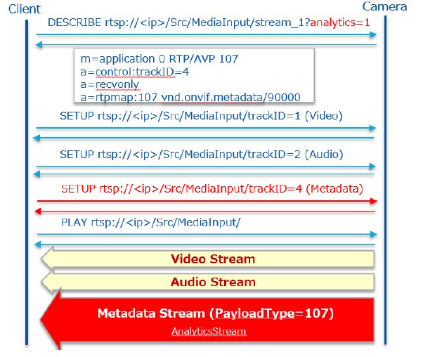

"モジュールカメラ" 紹介：
- モジュールカメラ｜ポータルサイト (i-pro.com)
- 各種マニュアル - Module Camera Technical Information - モジュールカメラ｜ポータルサイト (i-pro.com)


本ページは i-PRO株式会社 の有志メンバーにより記載されたものです。
本ページの情報は ライセンス に記載の条件で提供されます。
本ページでは、i-PRO の AI アプリ 「WV-XAE200WUX (AI動体検知アプリケーション) 」 が提供する「外部インターフェース仕様」のうち、ONVIFメタ情報を受信する Python プログラムをご紹介します。
このプログラムを応用することで、あなたは WV-XAE200WUX が動体検知をした時だけに、JPEG画像を受信することがができるようになります。
こちらに記載の内容は i-PRO のカメラ "モジュールカメラ（AIスターターキット）" を使って動作確認しています。未確認ですが「WV-XAE200WUX (AI動体検知アプリケーション)」を使用できる他の i-PRO カメラを使用する場合も恐らくそのまま利用可能です。
カメラの設定やAIアプリケーションのインストールについては、「機能拡張ソフトウェア (WV-XAE200WUX) と接続する」をご参照ください。
* ONVIFは、ONVIF,Inc.の商標です。
"モジュールカメラ" 紹介：
・カメラの映像設定で、ストリーム(1)は、H.264で動作確認をしています。
・カメラのユーザー管理は、認証:on、認証方式:Digestで動作確認をしています。
・AIカメラ拡張ソフトウェアの外部インターフェース仕様書は サポートポータル - 開発資料に掲載されています。
※本書記載時点の最新版は v1.10 でした。
・ONVIFメタ情報の電文フォーマットについては、「4. ONVIF Meta Stream」 に記載されています。
・イベント発生時のJPEG画像を取得するためには、「4.2. Event Stream」 に記載されている通知電文を受信し、Imageパラメータの情報を取り出す必要があります。
・ONVIFメタ情報の通信シーケンスについては、「10.2. ONVIF Meta Streamの送信シーケンス」 に記載されています。
・サンプルプログラムでは、RTSP URLによるイベントストリーム受信を実装しています。
・イベント発生時のJPEG画像を取得するためには、RTSP DESCRIBEに「event=1」 を指定します。

サンプルプログラムを receive_onvifmeta_event/ws_metarcv.py として公開しています。
| AIカメラ : | MK-DVASTNP01, | 2.00 |
| AIカメラ拡張ソフトウェア : | WV-XAE200WUX, | 3.10 |
| 言語 : | Python, | 3.9.13 |
| OS : | Windows 10 Pro, | 21H2 |
・RTSPの送受信をおこなうために、websocket-client を使用しています。
pip3 install websocket-client
・ソースコードの以下の箇所を、使用するカメラの設定に合わせて変更して実行します。
# カメラ接続情報
_cam_ip = "192.168.0.10" # Change to match your camera setting
_cam_id = "user-id" # Change to match your camera setting
_cam_pwd = "password" # Change to match your camera setting
・実行するとカレントディレクトリにimageフォルダを作成し、受信したJPEG画像を保存します。(ファイル名には電文に含まれる日付を付与)
サンプルプログラムのソースコードは、下記 github より取得できます。
下記 github のソースコードと本ページの内容は差異がある場合があります。
i-pro-corp/python-examples: Examples for i-PRO cameras. (github.com)
本ページの情報は、特記無い限り下記ライセンスで提供されます。
| 2023/02/01 | - | 新規作成, | 小澤和哉 |
i-PRO - Programming Items トップページ